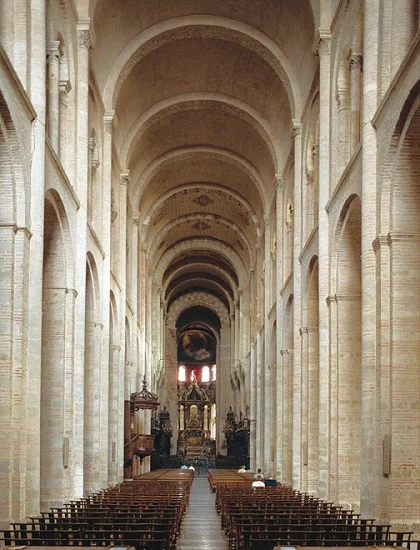

04. 서유럽 봉건 사회와
비잔티움 제국의 발전
프랑크 왕국 · 봉건 사회 · 크리스트교 · 비잔티움 제국
테오도시우스 복습
- 테오도시우스는 크리스트교 국교화를 단행하여 크리스트교를 로마 제국의 유일한 종교로 삼았다.
- 그가 죽은 뒤 로마 제국은 동로마와 서로마로 분리되었다.
콘스탄티누스 복습
- 콘스탄티누스는 313년 밀라노 칙령을 발표하여 크리스트교를 공인하였다.
- 그는 325년 니케아 공의회를 열어 아타나시우스파를 정통 교리로 채택하였다.
- 그는 비잔티움으로 수도를 옮기고 이를 콘스탄티노폴리스로 이름을 바꾸었다.
디오클레티아누스 복습
- 3세기 위기 속에서 디오클레티아누스는 제국을 넷으로 나누어 다스리는 4제 통치 체제를 마련하였다.
- 또한 그는 황제권을 크게 강화하여 전제 군주제를 도입하였다.
제정의 성립 복습
- 2차 삼두 정치를 주도한 옥타비아누스는 악티움 해전에서 승리하여 로마의 지배권을 장악하였다.
- 그는 프린켑스(제1 시민)를 자처하고, 원로원으로부터 '존엄한 자'를 뜻하는 아우구스투스 칭호를 받아 사실상 제정을 시작하였다.
그라쿠스 형제의 개혁 복습
- 포에니 전쟁 이후 노예 노동을 이용한 대농장인 라티푼디움이 유행하면서 자영농이 몰락하였다.
- 이에 그라쿠스 형제는 호민관에 취임하여 대토지 소유를 제한하는 농지법과 시민에게 값싼 곡물을 제공하는 곡물법을 실시하였다.
- 그러나 그라쿠스 형제의 개혁은 귀족의 반발로 실패하였다.
평민의 신분 투쟁 복습
- 상공업이 발달하면서 부유한 평민이 중장 보병으로 활약하였고, 이들이 정치적 권리를 요구하자 평민의 대표인 호민관과 평민들의 의결 기구인 평민회가 설치되었다.
- 이후 제정된 호르텐시우스법으로 평민회의 결의가 법적 효력을 가지게 되었으며, 평민은 법률상 귀족과 동등한 지위를 얻었다.
헬레니즘 문화 복습
- 그리스 문화가 동방으로 확산되며 그리스 문화와 오리엔트 문화가 융합되었다.
- 이 시기 문화는 개인주의적 성격과 더불어 세계 시민주의적 성격을 띠었다.
- 그리스 문화와 오리엔트 문화가 융합된 문화를 헬레니즘 문화라고 한다.
- 헬레니즘 문화의 영향으로 인도에서는 간다라 미술이 탄생하였다.
알렉산드로스의 제국 건설 복습
- 필리포스 2세의 뒤를 이은 알렉산드로스는 동방 원정을 시작하였다.
- 아케메네스 왕조 페르시아를 정복한 알렉산드로스는 이어서 이집트까지 정복하였다.
- 알렉산드로스의 원정군은 동쪽으로 인더스 강까지 진출하였다.
- 알렉산드로스는 정복지 곳곳에 알렉산드리아(이)라는 도시를 세워 그리스인들을 이주시켰다.
아테네의 민주 정치 ③ 복습
- 델로스 동맹과 펠로폰네소스 동맹이 충돌하며 펠로폰네소스 전쟁이 일어났다.
- 전쟁은 스파르타의 승리로 끝났고, 그리스 세계의 내분은 더욱 심화되었다.
- 내분에 빠진 그리스는 마케도니아의 필리포스 2세에게 정복되었다.
아테네의 민주 정치 ② 복습
- 페리클레스는 모든 성인 남자 시민이 민회에 참석할 수 있도록 하였다.
- 민회·배심원 등 공적 직무를 맡은 시민에게 공무 수당이 지급되었다.
- 장군 등 특수 직책을 제외한 관직과 배심원은 관직 추첨(으)로 선출하였다.
아테네의 민주 정치 ① 복습
- 클레이스테네스는 부족제를 혈연 중심에서 거주지 중심으로 개편하였다.
- 시민들의 정치 참여를 확대하기 위해 500인 평의회가 설치되었다.
- 독재자가 될 가능성이 있는 인물을 투표로 추방하는 도편 추방제가 시행되었다.
- 그리스·페르시아 전쟁 이후 아테네를 맹주로 하는 델로스 동맹이 결성되었다.
폴리스의 성립 복습
- 고대 그리스에서는 도시를 중심으로 자급자족과 자치를 원칙으로 하는 작은 국가인 폴리스가 형성되었다.
- 폴리스에는 신전 등이 모인 종교의 중심지인 아크로폴리스가 있었다.
- 폴리스에는 시민들이 모여 정치·경제 활동을 벌인 광장인 아고라가 있었다.
사산 왕조 페르시아
- 사산 왕조 페르시아는 아케메네스 왕조 페르시아의 부흥을 내걸고 건국되었다.
- 사산 왕조 페르시아는 동서 교통의 요충지를 차지하고 중계 무역으로 번영하였다.
- 사산 왕조 페르시아는 비잔티움 제국과의 계속된 전쟁과 계승 분쟁으로 쇠퇴하다가 이슬람 세력에 멸망하였다.
아케메네스 왕조 페르시아 ②
- 다리우스 1세는 전국을 20여 개 행정 구역으로 나누어 총독을 파견하였다.
- 다리우스 1세는 '왕의 눈', '왕의 귀'라 불리는 감찰관을 보내 지방을 감시하였다.
- 다리우스 1세는 '왕의 길'을 건설하고 역참제를 정비하여 중앙 집권 체제를 강화하였다.
아케메네스 왕조 페르시아 ①
- 아케메네스 왕조 페르시아의 키루스 2세는 기원전 6세기 중엽 서아시아 지역을 통일하였다.
- 키루스 2세는 정복한 민족의 문화와 종교를 존중하는 포용 정책을 통해 제국을 성장시켰다.
아시리아
- 아시리아는 기원전 7세기 철제 무기와 전차로 무장한 기병을 앞세워 서아시아 대부분을 통일하였다.
- 아시리아는 수도 니네베에 왕립 도서관을 세워 학문 발전을 촉진하였다.
- 아시리아는 피지배 민족에 대한 강압적 통치로 반란이 일어나 멸망하였다.
굽타 왕조 복습
- 굽타 왕조 시기에 브라만교를 바탕으로 민간 신앙과 불교 등이 융합되어 힌두교가 성립하였다.
- 왕의 권위를 높이기 위해 왕들은 자신을 비슈누에 비유하였다.
- 굽타 왕조 시기 산스크리트어가 공용어로 사용되며 산스크리트 문학이 발달하였다.
- 간다라 양식과 인도 고유의 특색이 융합된 굽타 양식이 발달하였다.
쿠샨 왕조 복습
- 이란 계통의 민족이 세운 쿠샨 왕조는 인도 서북부를 통일하고 동서 교역로를 장악하여 번영하였다.
- 카니슈카왕 때 쿠샨 왕조는 북인도에서 중앙아시아에 이르는 최대 영토를 확보하며 전성기를 맞았다.
- 중생의 구제를 목표로 부처를 초월적 존재로 신격화한 대승 불교가 발달하였다.
- 헬레니즘 문화와 인도 문화가 융합된 간다라 미술이 대승 불교와 함께 동아시아로 전파되었다.
마우리아 왕조 복습
- 찬드라굽타는 알렉산드로스의 침략 이후 북인도의 혼란을 수습하며 마우리아 왕조를 세웠다.
- 마우리아 왕조의 전성기를 이끈 아소카왕은 칼링가 전투의 참상을 겪은 뒤 불교에 귀의하여 선정을 베풀었다.
- 아소카왕 때 개인의 해탈을 강조하는 상좌부 불교가 발달하였다.
불교와 자이나교의 성립 복습
- 윤회 사상을 바탕으로, 카스트제를 극복하고자 하는 움직임 속에서 자이나교와 불교가 성립하였다.
- 바르다마나(마하비라)가 창시한 자이나교는 엄격한 계율과 고행을 통한 해탈을 추구하였다.
- 고타마 싯다르타(석가모니)가 창시한 불교는 인간의 평등과 윤리적 실천을 통한 해탈을 강조하였다.
헤이안 시대 복습
- 794년 귀족 세력을 견제하기 위해 헤이안쿄(교토)로 천도하면서 헤이안 시대가 시작되었다.
- 9세기 말 당이 쇠퇴하자 견당사 파견을 중지하였다.
- 이후에도 민간 무역은 지속되어 대외 무역 창구가 규슈의 다자이후로 집중되었다.
- 견당사 파견 중지를 계기로 가나 문자 성립, 와카 유행 등 일본 고유의 국풍 문화가 발달하였다.
나라 시대 복습
- 710년 당의 장안을 본떠 조성한 헤이조쿄(나라)로 천도하면서 나라 시대가 시작되었다.
- 나라 시대에는 견신라사와 견당사가 파견되어 대외 교류가 이루어졌다.
- 불교 진흥을 위해 도다이사가 건립되었다.
- 일본의 고대 신화와 역사를 정리한 《고사기》와 《일본서기》가 편찬되었다.
일본 고대 국가의 성립 복습
- 6세기 초 쇼토쿠 태자는 중국과 한반도의 선진 문화를 수용하여 정치 개혁을 추진하였다.
- 이 시기 불교 장려책이 실시되면서 아스카 문화가 발전하였다.
- 7세기 중반 군주 중심의 중앙 집권적 체제를 지향한 다이카 개신이 단행되었다(645).
- 이후 당의 율령을 모방한 다이호 율령이 반포되었다.
당 복습
- 당 태종은 동돌궐을 정복하고 율령 체제를 정비하였는데, 이 시기를 정관의 치라 부른다.
- 8세기 균전제가 붕괴하는 가운데 절도사 안녹산과 사사명이 일으킨 안사의 난으로 당은 크게 쇠퇴하였다.
- 균전제 붕괴 이후 당은 토지와 자산을 기준으로 세금을 부과하는 양세법을 실시하였다.
- 결국 절도사 주전충에 의해 당은 멸망하였다(907).
수 복습
- 수 문제는 9품중정제를 폐지하고 시험을 통해 인재를 선발하는 과거제를 실시하였다.
- 수 문제는 중앙 관제를 정비하여 3성 6부제를 마련하였다.
- 수 양제는 강남과 화북을 잇는 대운하를 완성하여 남북 간 경제 교류를 촉진하였다.
위진 남북조 복습
- 북위의 효문제는 평성에서 뤄양으로 천도하고 선비족의 언어와 복장을 금지하는 등 한화 정책을 추진하였다.
- 위진 남북조 시대에는 추천을 통해 인재를 선발하는 9품중정제가 실시되어 문벌 사회가 형성되었다.
- 북위 효문제 때 처음 시행된 균전제는 농민에게 국가가 토지를 지급하는 토지 제도로, 이후 수·당 대까지 이어졌다.
한나라 복습
- 한 고조(유방)는 봉건제와 군현제를 절충한 군국제를 실시하였다.
- 한 무제는 유교를 통치 이념으로 삼아 오경박사를 설치하고 태학을 설립하였다.
- 인재 등용을 위해 지방관이 향촌의 인물을 추천하는 향거리선제를 실시하였다.
- 물자 유통과 재정 확충을 위해 균수법과 평준법을 시행하고, 화폐를 오수전으로 통일하였다.
진나라 복습
- 사상 통제를 위해 책을 불태우고 유생들을 산 채로 묻은 분서갱유를 단행하였다.
- 북방 흉노족의 침입을 막기 위해 만리장성을 축조하였다.
- 대규모 토목 공사와 무리한 대외 원정으로 백성들의 불만이 커져 진승 오광의 난 등 농민 반란이 일어났고, 결국 진은 멸망하였다.
진나라 복습
- 기원전 221년 전국을 통일한 진왕 정은 스스로를 시황제라 칭하였다.
- 진시황제는 전국에 관리를 파견하여 다스리는 군현제를 실시하였다.
- 중앙 집권 강화를 위해 화폐 통일과 도량형 통일을 단행하였다.
춘추 전국 시대 복습
- 춘추 시대에는 춘추 5패가 존왕양이를 명분으로 제후국들을 통솔하였다.
- 전국 시대에는 전국 7웅이 서로 패권을 다투는 약육강식의 시대였다.
- 부국강병을 위한 제후국들의 경쟁 속에서 유가·법가·도가·묵가 등 다양한 사상가 집단인 제자백가가 등장하였다.
- 기원전 2500년경 황허강과 창장강 일대에서 문명 발전, 하 왕조(얼리터우 유적)는 문헌상 최초의 국가
- 상 왕조: 왕이 점친 내용을 갑골에 기록하는 신권 정치 실시
- 점친 내용과 결과를 갑골문으로 기록 → 한자의 기원
- 상을 멸망시키고 건국, 왕이 수도 인근을 직접 지배하고 제후에게 나머지 지역을 다스리게 하는 봉건제 실시
- 혈연에 기초한 종법 제도 발전
- 기원전 2500년경 인더스 강 상류 펀자브 지방에서 드라비다인이 형성한 것으로 추정
- 계획도시 하라파, 모헨조다로 건설
- 기원전 1500년경 아리아인 진출 — 중앙아시아에서 북인도로 이동, 이후 갠지스강까지 진출
- 원주민을 지배하기 위해 카스트제 성립(브라만·크샤트리아·바이샤·수드라)
- 자연신을 숭배하는 브라만교 성립, 경전 《베다》 사용
| 구분 | 메소포타미아 | 이집트 |
|---|---|---|
| 발생지 | 티그리스·유프라테스강 | 나일강 유역 |
| 지형 | 개방적 → 지배 세력 잦은 교체 | 폐쇄적(사막·바다) → 안정적 왕조 |
| 최고 통치자 | 왕 = 지배자, 제사장 (신정 정치) | 파라오 (태양신 '라'의 아들) |
| 세계관 | 현세 중시 (길가메시 서사시) | 내세적 (사후 세계 중시) |
| 문자 | 쐐기 문자 | 상형 문자 (파피루스에 기록) |
| 역법·수학 | 태음력 · 60진법 | 태양력 · 10진법 |
| 대표 건축 | 지구라트 | 피라미드 (파라오의 무덤) |
| 대표 법전 | 《함무라비 법전》 | — |
1. 프랑크 왕국의 성립과 발전
(1) 프랑크 왕국의 등장
- 게르만족의 이동: 4세기 후반부터 이동 → 서로마 제국 곳곳에 국가 건립
- 프랑크 왕국: 갈리아 지방에서 성장
1. 프랑크 왕국의 성립과 발전
(2) 메로베우스 왕조
- 클로비스: 메로베우스 왕조 건립, 로마 가톨릭으로 개종
1. 프랑크 왕국의 성립과 발전
(2) 메로베우스 왕조
- 카롤루스 마르텔: 궁재(宮宰)로서 실권 장악 → 투르·푸아티에 전투 732년 승리 — 이슬람 세력 격퇴
1. 프랑크 왕국의 성립과 발전
(2) 메로베우스 왕조
- 피핀: 카롤루스 마르텔의 아들, 새 왕조 건립 → 이탈리아 중부 지역을 교황에게 헌납 → 교황령의 시초
1. 프랑크 왕국의 성립과 발전
(3) 카롤루스 왕조 — 카롤루스 대제
- 영토 확장 → 서유럽 대부분 통합
- 크리스트교 보급 + 궁정 학교 건립 → 카롤루스 르네상스
- 800년 교황에게 서로마 황제로 대관(戴冠) — 교회와 왕권의 결합
1. 프랑크 왕국의 성립과 발전
(4) 카롤루스 대제 사후 — 3국 분열

2. 서유럽 봉건 사회의 성립
(1) 배경 — 외침의 혼란
- 노르만족의 이동: 9세기경 북유럽 → 남쪽으로 이동 → 키예프 공국 · 노르망디 공국 · 노르만 왕조 등 성립
- 마자르족, 이슬람 세력의 침입으로 혼란 가중
2. 서유럽 봉건 사회의 성립
(2) 봉건 사회의 성립
- 유력자들이 스스로 무장 → 기사 계급화, 지역민 보호 ↔ 예속 농민화
- 기사 계급 사이의 주종 관계 확산 → 지방 분권 가속화
→ 봉건제 성립
3. 크리스트교의 성장
(1) 로마 교회의 성장
- 5대 교구 중 서유럽 유일
- 교황 = 로마 교회의 주교
- 서유럽 교회 전체를 주도
- 중세인의 정신세계 · 일상생활에 영향
3. 크리스트교의 성장
(2) 로마 가톨릭과 그리스 정교회의 분열
- 비잔티움 황제 레오 3세의 성상 숭배 금지령 → 로마 교회가 이를 거부
→ 동·서 교회 대립 격화 → 교회 분열 - 서유럽 → 로마 가톨릭 교회 (교황 중심)
- 동유럽 → 그리스 정교회 (비잔티움 황제 영향)
4. 교황과 황제의 대립
(1) 로마 가톨릭의 세속화와 개혁
- 성직자의 분봉(分封)
- 성직자 임명권을 세속 권력이 행사
→ 교회 부패 심화
4. 교황과 황제의 대립
(1) 로마 가톨릭의 세속화와 개혁
- 클뤼니 수도원 주도 (10세기 초) 교회 개혁 운동
→ 성직 서임권 분쟁으로 발전
4. 교황과 황제의 대립
(2) 카노사의 굴욕
- 배경 : 교황 그레고리우스 7세 — 세속 권력의 성직자 임명 금지

4. 교황과 황제의 대립
(2) 카노사의 굴욕
- 신성 로마 제국 황제 하인리히 4세가 교황을 무시

4. 교황과 황제의 대립
(2) 카노사의 굴욕
- 교황이 황제 하인리히 4세를 파문

4. 교황과 황제의 대립
(2) 카노사의 굴욕
- 제후·주교의 지지 약화 → 하인리히 4세, 카노사에서 사죄

4. 교황과 황제의 대립
(2) 카노사의 굴욕
- 결과 : 1122년 보름스 협약 → 교황의 서임권 확정
5. 중세 서유럽의 문화
(1) 학문 — 신학 중심 발달 (전성기 12~13세기)
교부 철학 (중세 초기)
아우구스티누스
신앙 우위 · 교회 교리 정립
스콜라 철학 (십자군 전쟁 이후)
토마스 아퀴나스
신앙 + 이성의 조화 추구
5. 중세 서유럽의 문화
(2) 건축 양식의 변화
🏟️ 로마네스크 양식 11세기경
두꺼운 벽 · 돔 · 아치 중심
묵직하고 어두운 내부
대표: 피사 대성당


5. 중세 서유럽의 문화
(2) 건축 양식의 변화
🗼 고딕 양식 12세기경~
첨탑 · 스테인드글라스
높고 밝은 내부 공간
대표: 샤르트르 대성당
6. 비잔티움 제국의 발전과 쇠퇴
(1) 비잔티움 제국의 성립
- 서로마 멸망 이후 남은 동로마 제국이 이후 약 1,000년간 유지
- 정치: 황제권 강함 (황제가 교회에 영향력 행사)
- 경제: 동서 교통의 중심으로 무역 번영
6. 비잔티움 제국의 발전과 쇠퇴
(2) 전성기 — 유스티니아누스 황제
- 로마 제국 영토 대부분 회복
- 로마법 집대성 → 유스티니아누스 법전 편찬
- 제도: 유스티니아누스 사후 군관구제와 둔전병제
6. 비잔티움 제국의 발전과 쇠퇴
(3) 쇠퇴와 멸망
- 사산왕조 페르시아와 이슬람 세력의 계속된 침입 → 군관구제와 둔전병제 점차 붕괴
- 황제권 약화, 셀주크 튀르크의 공격
- 1453년 오스만 제국의 공격으로 멸망
6. 비잔티움 제국의 발전과 쇠퇴
(4) 비잔티움 제국의 문화
- 특징: 그리스 정교를 바탕으로 그리스·로마 문화 + 헬레니즘 문화를 융합한 독자적 문화
- 공용어: 그리스어
- 비잔티움 양식: 외부의 웅장한 돔 + 내부 모자이크 벽화 → 대표: 성 소피아 성당
개념 확인 문제 — 1번
다음 내용이 옳으면 ○표, 틀리면 ×표 하시오.
개념 확인 문제 — 2번
빈칸에 들어갈 알맞은 말을 쓰시오.
개념 확인 문제 — 3번
(가), (나)에 들어갈 알맞은 말을 쓰시오.
개념 확인 문제 — 4번
프랑크 왕국의 각 인물과 설명이 옳게 짝지어진 것을 <보기>에서 있는 대로 고른 것은? ⑤ ㄷ, ㄹ
ㄴ. 카롤루스 마르텔 — 악티움 해전에서 승리하였다.
ㄷ. 피핀 — 교황에게 이탈리아 중부 지역을 기증하였다.
ㄹ. 카롤루스 대제 — 교황에게 서로마 황제로 대관을 받았다.
개념 확인 문제 — 1번
다음 내용이 옳으면 ○표, 틀리면 ×표 하시오.
개념 확인 문제 — 2번
빈칸에 들어갈 알맞은 말을 쓰시오.
개념 확인 문제 — 3번
(가), (나)에 해당하는 내용끼리 옳게 짝지어진 것은? ② 고딕 양식 — 비잔티움 양식
(나) 외부의 웅장한 돔과 내부를 장식한 모자이크 벽화를 특징으로 하며, 성 소피아 대성당이 대표적이다.
- 고딕 양식 — 간다라 양식
- 고딕 양식 — 비잔티움 양식
- 로마네스크 양식 — 고딕 양식
- 로마네스크 양식 — 헬레니즘 양식
- 비잔티움 양식 — 고딕 양식
프랑크 왕국의 성립 복습
- 프랑크족의 클로비스는 메로베우스 왕조를 세우고, 게르만족 국가 중 처음으로 로마 가톨릭으로 개종하여 로마인과 교회의 지지를 얻었다.
- 궁재 카롤루스 마르텔은 투르·푸아티에 전투(732)에서 이슬람 세력의 침입을 격퇴하였다.
카롤루스 왕조의 발전 복습
- 카롤루스 마르텔의 아들 피핀은 카롤루스 왕조를 열고, 이탈리아 중부 지역을 교황에게 기증하여 교황령의 시초를 마련하였다.
- 피핀의 아들 카롤루스 대제는 서유럽 대부분을 통합하고, 800년 교황에게서 서로마 황제의 관을 받았다.
교황과 황제의 대립 복습
- 성직자 서임권을 둘러싸고 교황과 대립하던 신성 로마 제국 황제 하인리히 4세는 파문을 당하자, 카노사의 굴욕(1077)으로 교황에게 굴복하였다.
- 이후 1122년 보름스 협약이 체결되어 성직자 서임권은 교황이 차지하게 되었다.
중세 서유럽의 건축 양식 복습
- 11세기경에는 두꺼운 벽과 반원 아치, 돔을 특징으로 하는 로마네스크 양식이 유행하였다.
- 12세기경부터는 높은 첨탑과 스테인드글라스를 특징으로 하는 고딕 양식이 유행하였다.
비잔티움 제국 복습
- 서로마 제국 멸망 이후에도 비잔티움 제국은 약 1,000년간 존속하였으며, 황제가 교회를 지배할 만큼 황제권이 강하였다.
- 6세기 유스티니아누스 황제는 옛 로마 영토의 대부분을 회복하고 《유스티니아누스 법전》을 편찬하였다.
- 그의 사후 비잔티움 제국은 제국을 여러 군관구로 나누어 군사령관에게 맡기는 군관구제와, 농민에게 토지를 주고 군역을 지게 하는 둔전병제를 실시하였다.